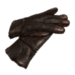
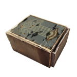

ITEMS
| Item Types | ||
|---|---|---|
| WEAPONS |  |
There are three firearms in the game: The pistol, shotgun, and rifle. Guns require ammo to use. They will degrade with each use, causing them to deal less damage, lose accuracy, and increase the chance of the gun jamming. This can be reversed by paying for repairs or finding the materials and repairing it yourself. |
| CLOTHING |  | Clothing is useful because it can reduce damage taken and slows the loss of Immunity in infected districts. They will degrade over time, and must be repaired before they break. |
| DRUGS |  | Drugs are used to forestall and reduce infection from the plague. Some drugs are used to increase your immunity, while others are used to lower your infection. Additionally, there are some rare drugs that can outright cure the plague, but these items are precious and should not be wasted. |
| HERBS | Herbs can be collected out in the wild, or occasionally within the town itself. There are many types of herbs and they can be combined to make Tinctures. Herbs can also be sold or traded as well. You can find them by the unique sounds they make, or by their glow during the night. |
|
| RATIONS | Food is a vital resource and it is in short supply. There are many kinds of food with various effects, but generally they are used to lower hunger. Food can be bought, found, or stolen. The town is facing a shortage on food so it is important collect as much as you can get. |
|